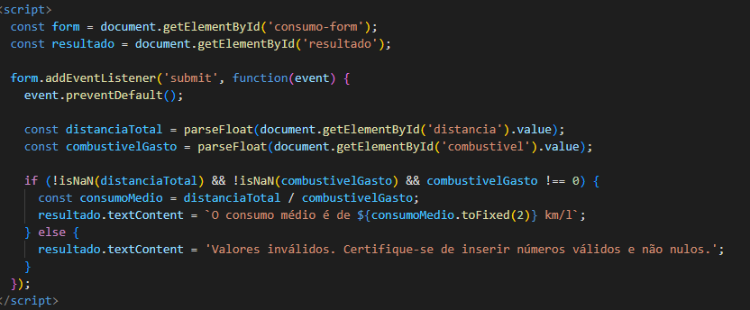
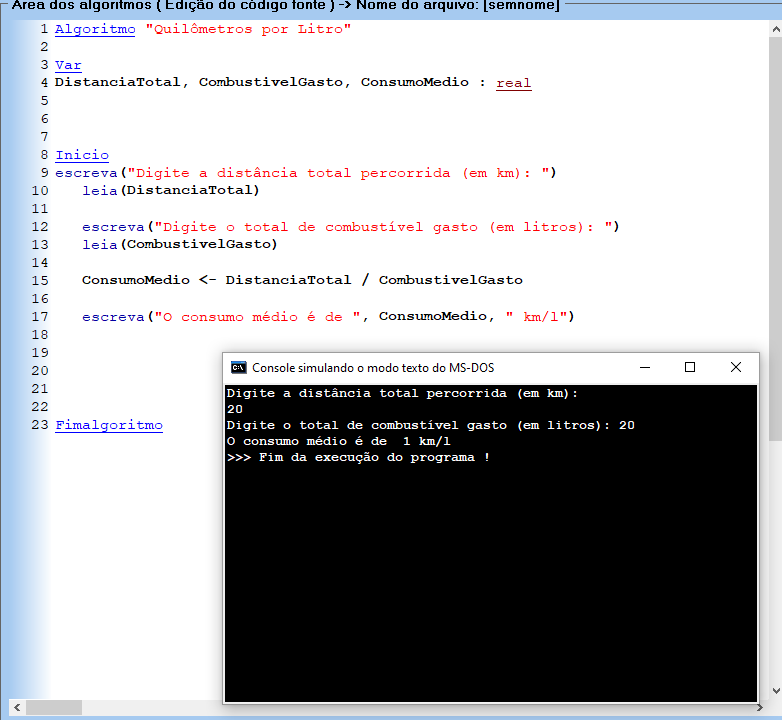

Script:

VisualG

Algoritmo 38 - "Quilômetros por Litro"
Desenvolver um programa que realize o cálculo de consumo de combustível por quilometragem, para veículos (km por litro). Para isso, devem ser digitados os dados de distância total percorrida (km) e total de combustível gasto (litros), mostrando o resultado ao final.
Pseudocódigo:
var
DistanciaTotal, CombustivelGasto, ConsumoMedio : real
inicio
escreva("Digite a distância total percorrida (em km): ")
leia(DistanciaTotal)
escreva("Digite o total de combustível gasto (em litros): ")
leia(CombustivelGasto)
ConsumoMedio <- DistanciaTotal / CombustivelGasto
escreva("O consumo médio é de ", ConsumoMedio, " km/l")
fimalgoritmo